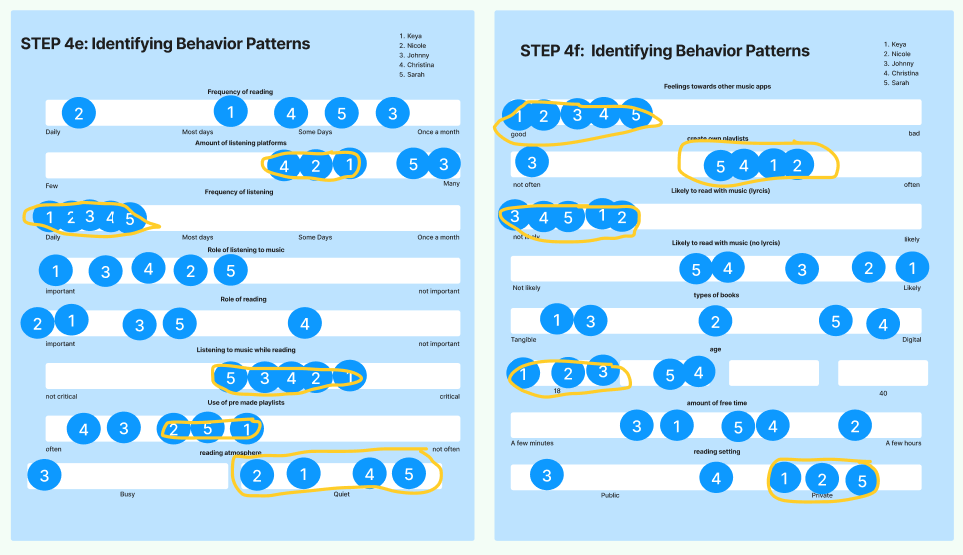

Booktunes Design Process

Executive Summary
| Approach: Goal Directed Design | Objectives: Make a working app prototype in figma. |
|---|---|
| Team Size: 4 | Tools: Discord, FigJam, Figma, Canva |
| App Idea: A book recommendation and music player app. | Role: Team Member, Component Creation |
| Duration: 4 months | Links: Figma Prototype Research Report |
Introduction
This project was titled Booktunes. The concept behind booktunes is to make it easy for readers to find playlists and songs that match the "vibe" of the book they're reading. If you're reading Lord of the Rings, the music might be tense and epic. If you're reading Harry Potter, the music might be wondrous with strings.
To design the app prototype, we used a process called Goal Directed Design, or GDD. As it was a class settings, our team leader was the creator of the idea, so the requirements phase was dropped to fit within a 16-week course.
The rest of this page is organized by the GDD phases in order. See the method section below for a overview of GDD.
Method
GDD, or Goal Directed Design, was created by Alan Cooper, and is detailed in his book 'About Face – The essentials of interaction design'. The method is a behavior and evidence-based design process that uses research to create a fictional "persona", or average user, and then use that persona to create a robust application that fulfils the persona's requirements.
As mentioned earlier, our team leader was the creator of the idea, so the normally included requirements phase was dropped.
Adapted GDD Phases
| Phase 1 | Phase 2 | Phase 3 | Phase 4 | Phase 5 |
|---|---|---|---|---|
| Research | Modeling | Requirements | Framework | Refinement |
Research Phase
The Research Phase is all about collecting data. In the research phase, you look at competitors, review research literature, interview potential users, and talk with stakeholders.
Kickoff Meeting Since there was no
Literature Review Since there was no
Competitive Audit Since there was no
Stakeholder Interviews Since there was no
User Interviews
Since there was no
Modeling Phase
This phase is all about taking our raw research data and turning it into a persona. The first step is to take data points from the interviews and plot them on a behavioral variables map.
Next, we go over the behavioral variables map and identify behavior patterns by circling dots that are grouped together.
Finally, we take these behavior patterns and create a fictional character profile based on them in aggregate. This profile is called a persona. The persona will operate as our average user, and future design decisions will be based solely on this persona and it's goals. It's important to note that a persona isn't real, but they are assembled from the thoughts, feelings, behaviors, and motivations of real people.
Alan Cooper makes note of the role of personas in his book 'About Face'. “Personas provide us with a precise way of thinking and communicating about how groups of users behave, how they think, what they want to accomplish, and why.” (Cooper et al., 62)
Requirements Phase
The requirements phase is all about creating a list of requirements from our newly created persona and brainstorm what the end result might be like. The first step for this was to create a problem statement and a visions statement.
Problem Statement
The current state of the BookTunes industry lacks a niche-related app that focuses on readers and enhancing the reading experience and has focused primarily on the general generic use of listening to music. What existing products/services fail to address is the desire from readers for an app that offers playlist and music that corresponds with books. Our product/service will address this gap by capitalizing on this niche market by offering readers a central music hub with playlists that correspond with different books and genres.
Vision Statement
The new design of music a streaming app will help users achieve their goal of reading more by allowing them to find music that corresponds well with their books creating a relaxing reading environment with greater efficiency, and without problems of interruptive ads, inaccurate recommendations, and repetitive recommendations that they currently experience. This will dramatically improve BookTunes’ customer satisfaction ratings and lead to increased market share.
After creating the Problem and Vision statements, we created what is called a context scenario, which tells a story from the perspective of our persona and a day in their life while using Booktunes.
Finally, we created the requirements list based on our context scenario. We tracked all of the actions, objects, and contexts which appeared in the context scenario, and refined them into a list of required features and object for the app prototype to have.
Requirements List
- Access (action) pre-made playlist (object) on home screen (context)
- Streams (action) custom playlist (object) from app library (context)
- Press (action) pause button (object) to stop the music (context)
- Explore (action) for new book (object) on book recommendation section of the search page
- Streams (action) book title playlist (object) made by another user from search page (context)
- Creates (action) custom book title playlist (object) in app library (context)
- Explores (action) genre categories (object) on search page (context)
- Streams (action) ambient radio (object) as background noise on home page(context)
- Shares (action) custom playlist (object) with friend over message (context)
Frameworks Phase
Before instantly jumping to the final, high fidelity prototype, we created a low-fidelity wireframe in FigJam based on our requirements. If we had jumped ahead, we would be lost when creating the prototype. The prototype is all about the details and fleshing out the idea, whereas the wireframe is for organizing the paths and making sure they flow well. We used two different colored arrows to distinguish between different scenarios.
The purple arrows represent Key Paths, which describe a user's most commonly used paths. The orange arrows represent Validation Paths, which are paths that are used very infrequently, or only once.
The wireframe allows us to visually represent the persona's goals and requirements. In doing the wireframe, we discovered what we needed more screens than anticipated. If we had skipped to prototyping, we would have been blindsided.
Refinement Phase
The refinement phase is all about taking a "rough draft" of the prototype and conducting usability testing to detect issues, inconsistencies, easily misunderstood elements, and other problems that would have caused a bad experience to users or degrade the quality or functionality of the app. In our case, we had two different participants each use our prototype. They were each asked to complete a number of tasks within the app and rate it's difficulty from 1 to 5, and then elaborate on their thoughts and feelings regarding the task.
After each usability test, we made brief changes to improve our prototype before the next one. After this concluded, we continued working on the prototype until we deemed it completed.
Conclusion
Goal Directed Design is a fantastic design method. It uses actual research and evidence to create a product, rather than just guessing or conducting usability testing at the last minute. If I could do this project over again, I would have communicated with my team better, and perhaps contributed to the research report more. User feedback during the refinement phase was immensely helpful, and spurred us to change many things, such as changing the alignment of the back arrows on each page, and changing the "perfect pairs" page to be easily readable. This project was a valuable experience for me in both teamwork and in learning the fundamentals of interaction design.
Works Cited
Cooper, Alan & Robert Reimann, David Cronin, Christopher Noessel. 2014. About Face: The Essentials of Interaction Design, 4th Edition. Hoboken, NJ: Wiley Press.